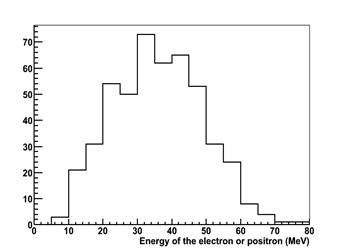

Muon Decay in the MINERvA Experiment
Particle Physics Activity Unit for High School Physics Students
Margaret Menzies – Harbor City International School, Duluth, MN
Jackie Kitchenhoff, Northland High School, Remer, MN
Dr. Richard Gran, University of Minnesota Duluth, Duluth, MN
Students use actual MINERvA detector event data to find and record decay events from a particle called a muon, understand how atomic and sub-atomic decay processes work by seeing them happen. They calculate the average lifetime and half-life for the muon and also study conservation of energy
Development of this curriculum project was supported by the National Science Foundation
and researchers with the MINERvA experiment.
Special thanks to collaborators at the University of Rochester, New York:
Paul Conrow, Carol Hoffman, Jeffrey Paradis, and Dr. Kevin McFarland.
Also thanks to the authors of the Arachne web site
Nathaniel Tagg and Molly Clairemont at Otterbein University, Westerville, OH
Drafted Fall 2010
I.
Why Do You Want MINERvA in Your Curriculum?
Explore cutting edge science in the fascinating world of particle physics.
Students use real data to determine the lifetime and half-life of anti-muon neutrinos.
Understanding matter and anti-matter.
Explore standard physics topics like conservation of energy and matter, and principles of radioactive decay with a new twist in particle physics.
Provides insight into how real science creatively solves problems and explores the unseen world of fundamental particles.
You don't have to be Einstein to get involved with particle physics.
Choose as much or as little as you like to add depth to your physics curriculum, or offer this as an optional activity for some students or an after school physics club.
II.
Overview of Muon decay activities:
Students use actual MINERvA detector event data to record muon decay events, study conservation of energy, and understand decay processes at the sub-atomic level, and calculate average lifetimes, and half-lives of muons.
Here is a suggested outline for teaching this activity. It is only a suggestion. Please feel free to pick and choose your assignments to meet the needs of your students.
|
Day 1 |
Day 2 |
Day 3 |
Day 4 |
|
Fundamental Particles Background- Particle Adventure |
Understanding MINERvA PowerPoint |
Introduction to Arachne Tutorial |
Discussion of Activity 1 |
|
CHICOS- Measure the Half-life of Muons |
Model Building Activity |
Activity 1 |
History of the Neutrino Activity |
|
Histogram Activities |
Neutrino Birth and Death PowerPoint |
|
|
|
Day 5 |
Day 6 |
Day 7 |
Day 8 |
|
Types of Events |
Activity 2 |
Finish Calculations |
Arachne Scavenger Hunt |
|
Decay Uncertainty |
Begin Data Analysis |
Graph Data |
|
|
|
|
Follow up Activity |
|
III.
Essential Questions
Ten essential questions for the MINERvA muon decay activities.
(And four advanced questions as a bonus.)
Questions of fact or "What...?"
1. What are the characteristics of a random decay process like anti-muon decay or other forms of radioactive decay?
2. For anti-muon decay specifically, what is the average lifetime and the half-life, and what do those quantities represent?
3. What are the particle physics rules (all are conservation principles) for a decay?
4. What special forms of energy are involved in anti-muon decay?
5. What is the characteristic signature of decay events in the MINERvA detector?
A1. Advanced question. In addition to the time characteristics, the energy spectrum of anti-muon decay implies there are three particles (not two, not one) at the end of the decay process. Why?
A2. Advanced question. This lab uses anti-muon data from the MINERvA neutrino interaction experiment, but it doesn't look at the main neutrino-induced interactions. What kinds of events are observed in the MINERvA neutrino and anti-neutrino data?
Questions of skill or "How...?" and "Why...?"
6. How do you measure what you can't see?
7. How do I visually represent data, such as the range of times between the stopping of the anti-muon and the appearance of its decay positron?
8. Why are neutrinos and other subatomic particles important to study?
9. The analysis of this data shows large variation for couple reasons, especially when working with small quantities of data, like twenty anti-muon decay events. Why is that, how do you deal with that, and what are other more familiar examples of small set variation?
A3. Advanced Question: Sometimes data is messy or ambiguous. How do scientists deal with different interpretations of the same data?
A4. Advanced Question: How do scientists work collaboratively, and deal with possibly complicated issues in engineering and budgeting for their experiments?
10. How does the measurements in these activities fit in to the historical context of radioactive decay and the neutrino?
Ten
essential questions for the muon decay activities.
With short answers. More detailed answers are part of the material of these activities.
Questions of fact or "What...?" for the muon decay activity.
1. What are time characteristics a random decay process like anti-muon decay or other forms of radioactive decay?
Foremost, the process is random. For any muon, it is impossible to know in advance when it will decay, whether it will decay early or late or in between. That's kind of like flipping a coin but with a continuous range of outcomes, not just heads and tails. The other characteristic is that if you look at many decays, or try to predict what is likely or unlikely, you see the times follow an exponential curve. There are many more decays at short times, some in the middle, and a few even at very, very long times. These two properties, random process and exponential trend, are actually mathematically linked.
2. For anti-muon decay specifically, what is the average lifetime and the half-life, and what do those quantities represent?
The average lifetime is 2.2 microseconds. The half-life is 1.5 microseconds. If you have a collection of data, the average lifetime is simply the mathematical average you can do with a calculator or spread sheet, but you notice that the random exponential nature of the decay yields very short times and very long times. The decay times do NOT cluster around the average. The half-life is another characteristic time that describes a decay process. Literally, it means the time after which half of your sample has decayed and the other half has not, and you could get this number by making an ordered list of all the decay times you observed and estimating the middle (median) time. These two quantities are mathematically linked by a factor of the ln 2 = 0.693 (ln is the natural logarithm).
3. What are the particle physics rules (all are conservation principles) for a decay?
It goes without saying that momentum and energy are conserved, like they are in billiard ball collisions. Actually that leads to quite interesting conclusions, see the advanced questions. Another huge deal is that electric charge is conserved, if the decay process has +1 charge before, it will still have a net +1 charge after. In addition, there are some particle physics quantities that are conserved. The number of “leptons” including muons and electrons, and also their flavor is conserved, which sometimes appears in a tricky way involving particles and their anti-particles. Not for muon decay, but in other reactions, the number of “baryons” (but not their type) is conserved, of which the most common are protons and neutrons. [Our data sometimes has a mildly-exotic particle called a pion in it, this particle seems to not be a baryon nor a lepton, and doesn't seem to have any of these special conservation principles, only momentum, energy, and charge.]
4. What special forms of energy are involved in anti-muon decay?
The familiar kinetic energy for moving particles, or equivalently zero kinetic energy for particles that come to a stop and are not moving. But interestingly, this process involves the mass-energy (often called rest-energy) that a massive particle has even if it is not moving. Einstein's famous expression E = mc2 quantifies the observation that we can turn mass-energy into kinetic energy and vice versa. Specifically in these activities we are seeing a decay process that turns the mass of an anti-muon into the kinetic energy of a positron and two neutrinos.
5. What is the characteristic signature of decay events in the MINERvA detector?
MINERvA can observe only charged particles. A charged particle like an anti-muon (also called mu+) comes in the front or side of the detector and leaves a visible track, but then it stops in the middle somewhere, without exiting again. Then hundreds or even thousands of nanoseconds pass when suddenly a new particle appears right at the endpoint of the previous particle, and leaves a little burst of energy or even a short track going off in most any direction it pleases.
A1. Advanced question. In addition to the time characteristics, the energy spectrum of anti-muon decay implies there are three particles (not two, not one) at the end of the decay process. Why?
Because the anti-muon has stopped, it has zero momentum, even though it has some mass-energy 107 MeV that it can give up to give its decay products some kinetic energy. Its impossible to have one particle with kinetic energy but zero momentum, so that doesn't happen. It is possible to have two particles share the energy and have equal momentum in exactly opposite directions, but if you write that out as a billiard ball problem and conserve energy and momentum, it requires each new particle to have the same, specific amount of energy every time. (Mathematically, you have two equations for two unknowns and can solve for the unique solution.) What is observed is a wide range of possible energies, up to half the 107 MeV mass energy. This is possible if there are exactly three particles coming out of the decay process and many ways of sharing the momentum and energy between the three.
A2. Advanced question. This lab uses anti-muon data from the MINERvA neutrino interaction experiment, but it doesn't look at the main neutrino-induced interactions. What kinds of events are observed in the MINERvA neutrino and anti-neutrino data?
Neutrino interactions with the carbon nuclei in the MINERvA detector produce lots of different outcomes. MINERvA is able to observe those particles that have a non-zero electric charge by recording the “track” or trail of ionization energy they leave behind as they travel through the detector. In the data you can find events with one track coming out (but don't fool yourself and mistake this for one coming in the side!). Also you see two tracks, three tracks, all the way up to so many tracks you can't pick them out. In addition, you sometimes “see” neutral particles come out, not by seeing the neutral particle itself, but by finding another burst of energy in the detector that wasn't connected to any of the tracks.
Questions of skill or "How...?" and "Why...?"
6. How do you measure what you can't see?
For an anti-muon decay or a neutrino interaction, the process takes place on the nuclear scale or maybe even smaller. You can't make a movie of that close up. But if we observe and measure all the products of those reactions, we can reconstruct what must have happened in that instant when the reaction occurred. In some cases (see A2 above) we can combine our observations with other physics principles like conservation of energy and momentum make a conclusion about the existence of products that came out of the interaction that we didn't see!
7. How do I visually represent data, such as the range of times between the stopping of the anti-muon and the appearance of its decay positron?
There are lots of graphical ways of representing different kinds of data. Different graphs are good for different things. Line graphs for trends, other graphs show fractions of some total. Particle physics data is often represented with a form of bar-graph that is also called a “histogram”. It shows the simple number of occurrences of some outcome, like a coin toss heads/tails, or more interesting a range of times, or a range of energies. It allows you to visually see if there are more occurrences in a particular part of the whole range, or if they are equally distributed.
8. Why are neutrinos and other subatomic particles important to study?
Today's study of particle physics simultaneously explores the smallest scale and most fundamental energy processes in nature, but also how they contributed to the Big Bang and evolution of the universe on the very largest scale.
9. The analysis of this data shows large variation for couple reasons, especially when working with small quantities of data, like twenty anti-muon decay events. Why is that, how do you deal with that, and what are other more familiar examples of small set variation?
Consider the familiar coin flip. On average you get half heads and half tails. But if you flip ten times, its not actually likely to get five and five. I just tried it and got seven tails and three heads. This is an example of small number variation. In these activities, students will form the average decay time for twenty events, and calculate the half-life. Their values will show significant variation from one to another. Nobody's value is wrong, there is just a limit to how accurate a measurement you can make with only twenty events. When the class's data is put together, the resulting mesurement is better, the variations are reduced.
10. How does the measurements in these activities fit in to the historical context of radioactive decay and the neutrino?
Historically a decay process similar to muon decay and the interpretation of the energy spectrum that is the advanced activity led to the “discovery” or realization that there must be a neutral particle that was later named the neutrino. The early studies of radioactive decay and the mathematical interpretation of that as a random process led to the development of quantum theory and gave rise to the study of particles more fundamental than atoms.
A3. Advanced Question: Sometimes data is messy or ambiguous. How do scientists deal with different interpretations of the same data?
Data can really be consistent with multiple interesting interpretations! Scientific data isn't like an odd-numbered textbook question with the answer in the back. Having discussed the different interpretations with colleagues, it may be clear what kind of follow-up analysis would reveal the correct interpretation. Maybe a new, modified experiment is needed to sort out what is really going on.
Data often does bring about a difference of opinion. Sometimes strong biases are formed based on past experiences and pet projects. Sometimes the bias is toward the most interesting or glamorous interpretation rather than the simplest or less exciting. This can be a very dangerous thing, the team might put a lot of effort into pursuing or even publishing what turns out to be an incorrect interpretation. Team members must always keep the project goals in the forefront and make sure they are being met. Lots of valuable discussions often take place in order to decide how to interpret the data and make decisions on what avenue to follow next.
A4. Advanced Question: How do scientists work collaboratively, and deal with possibly complicated issues in engineering and budgeting for their experiments?
Collaboration among many scientists, engineers, etc. is a very valuable thing. One person alone has only their own knowledge to draw upon. Along with more people follows a larger knowledge base, more ideas, and more talent to make the experiment even more valuable than it was ever dreamed. The trick is to stay open minded as a team member and value others’ thoughts and ideas. Many times creative solutions can be found for sticky engineering problems and innovative ways to overcome economic limitations for experiments are more commonly the norm, rather than the ideal solution which can be too large a challenge for current technology, or unrealistic economically. Working collaboratively scientists can create the best possible and feasible experimental design.
IV.
Materials Needed
Computers to access Arachne for muon decay events
Calculators
Graph paper
Student datasheet copies
Follow-up question copies
V. Useful
Background Information You Should Know
Before attempting to guide your students through this activity, you may want to sharpen up on the following items:
A working knowledge of the types of sub-atomic particles: the familiar ones from physics and chemistry- electrons, protons, neutrons, and more exotic ones like neutrinos, muons, maybe pions.
A general understanding of ordinary “radioactive” decay, like maybe carbon-14 or radium nuclei. Look a bit at subatomic particle decay as a followup. A simplified list of decays are explained in the teacher's guide right after the answer keys.
An understanding of the specific physics rules of particle decay (these are listed in the same area as the particle decays list)
The MINERvA event display, called Arachne and what is being displayed in the events (this is supplied in the Directions for the Simple Arachne in the guide right after the MN Graduation Standards.)
An understanding of how to calculate an average lifetime from a list of individual lifetimes (the procedure is listed in the student directions.)
Knowledge of logarithms and natural logarithims and why they are used. This is often covered in an algebra-II or pre-calculus course. Your best math students may want to know- this info is included in the resources list.
The ability to teach your students how to read and create a histogram (this information is also included in the background information.)
An understanding of the MINERvA experiment as a whole (this is also supplied in the background information area. There is also a fun tour of how different interactions look in the MINERvA detector in the background information area.)
VI.
Resources Provided in Curriculum Package
Neutrino Life and Death powerpoint- This powerpoint lays out the production of neutrinos from the earliest stages of particle acceleration at Fermilab and discusses what happens when neutrinos interact with targets in interesting ways.
Histogram activities- This contain several worksheets that lead students into the world of histograms- they range from simple to advanced level analysis. Good to use if you feel that students need for background in this area.
Simple Arachne Directions- Instructions for using the Simple Arachne website- this can be provided to students as a handout.
MINERvA- What is It?- A student friendly powerpoint providing and overview of what MINERvA is all about.
Build a Model Activity- Building a model of MINERvA for aid in visualizing what MINERvA looks like and how it works.
Types of Events- Powerpoint representation of some of the possible events observable in the MINERvA detector.
History- Powerpoint short history of the some of the major developments in particle physics.
Professor Nienaber's Suessical Neutrino Presentation- A great Dr. Suessian type poem describing the historical development of the neutrino and its characteristics. A must read!
Standard Model Scavenger Hunt- This activity uses a Particle chart and sends students looking for information about specific particle types and other important players in particle physics. A more active way to provide student background on Fundamental Particles.
VII.
Things to know about working with MINERvA data + Arachne
The teacher key materials have been constructed with the data as it sits at the time of this writing of the curriculum activities. This is an active scientific investigation where the optimal conditions for observation are still being developed, so some of the data may change as parameters are tweaked to more effectively do the jobs the experiment sets out to do. This changes should be minor, and so the answers may not exactly agree with what students will find in later looks at the data. However, the answers should still be close enough for you to work with students with appropriate background information.
Decay events that happen in the range from 0-350 ns are not efficiently measured by the electronics in the MINERvA system. This is a design choice that is better for MINERva in some ways, but causes a small problem for this analysis. It means that there is likely to be a small shift of results in the direction of larger decay times. This is estimated to be about 10%. This can be mentioned to students if needed. It will most likely be more evident in the exponential graph of decay time. The first data bin is likely to be smaller than the second, causing a less than ideal peak for the exponential decay.
Muon decay events are most likely to appear in the front section of the detector, not the ECAL or HCAL sections. We have eliminated events that fall in these ranges for the purposes of the student activities. However, if students explore on their own they are likely to come across some events that will cross over into these sections. Some of these are likely to still be muon decay events, but the ECAL and HCAL regions are not ideal for the data analysis we are doing.
Energies for electrons produced should not exceed 58 MeV or so. This is because of the conservation of energy. Remember that the muon is likely to have decayed into a Michel electron as well as two neutrinos, so energy that is passed on from the decaying muon is shared among the three resultant decay particles. The muon that decays is at rest has a mass of about 107 MeV, so the electron can get no more than half this energy, because at least one of the neutrinos generated must move in the opposite direction of the electron, and consequently must have energy as well.
The Arachne program needs more recent Java enabled browsers. Internet Explorer will not ever work with Arachne. Firefox needs to be version 3.5 or later,Safari should be version 4.0 or later, Chrome needs to be version 5 or later. Be aware as well that the server that runs Arachne may on occasion go down. Be sure to check that Arachne is working the day before you try activities with students.
VIII.
Suggested sequencing for the components of this unit:
Day 1 Activities- Provide students with an introduction to fundamental particles, and radioactive decay.
Fundamental Particles Background- Particle Adventure is an excellent internet resource (see resource list) for gaining background on fundamental particles and their behavior. There is also a Standard Model Scavenger Hunt activity which uses a Particle poster to help students see varieties and features of sub- atomic particles.
CHICOS Measure the Half-Life of Muon Particles(See resource list)- a rich set of activities addressing exponential decay, graphing, probability/statistics, and concludes with exploring actual Cosmic ray muon decay events. The activities can stand alone, or together if you have lots of time provide an interesting comparison of two different muon decay type events.
Histogram activities- to provide a practical look at what histograms do and why kinds of data they are most useful in helping provide information about results. There are many activities here, so you will need to gauge what is needed for your students.
Day 2 Activities- Introduction to MINERvA
MINERvA- What is it? Powerpoint presentation- an overview of the project.
MINERvA model building- This activity is an opportunity for students to get a better visual idea of what MINERvA look like and how it is set up with a 3-D model construction activity. It provides an explanation of the X, U, V, and Z model that is used in Arachne and gives background on how difficult economic problems can be addressed with creative problem solving, rather than an expensive solution. If students are actually building the model this is likely to take most of a class period to complete. Another option is to build one as a teacher and have it available to discuss the parts in a shorter period of time.
Neutrino Birth and Death powerpoint (15 min.?) this will provide an overview of how a beam of neutrinos is produced at Fermilab and a general idea of what can happen to the neutrinos after they are created.
Day 3 Activities
Introduction to Arachne- using a projector, provide the students with direction on how to use Arachne to analyze data. Give them a copy of the Simple Archne Directions for reference when they are working on computers. This is a useful introduction page on the Arachne website, as well as a You Tube tutorial on Arachne use. (see resources) Students should also have the lab procedure for Activity 1 to refer to as you introduce the materials
Student groups will analyze 10 events and answer follow-up questions for further discussion next class day.
Day 4 Activities (History is optional- can be omitted if time is limited)
Discussion of first activity- determine where students had difficulty with interpreting data, compare results gained by students. Provide an overview of next activity with emphasis on handling large amounts of data and representing results. A good place to introduce the histograms, and potentially the uncertainty in measurements.
History of the Neutrino- a wide variety of resources available to use. You will likely decide on a combination of tools. There is a history powerpoint that outlines early developments in particle physics that lead to the discovery of the neutrino. There are images of a mural by Joseph Gianetti, from the wall of the Tower Soudan Underground Physics Laboratory in Soudan, MN, home of the MINOS far detector. This could serve as a discussion point for how familiar students are with the history of neutrino and the many pieces and players involved. There are images of the mural in full view, also a document with numbered detail about some of the images on the mural, also some images from the side illustrating the challenge to the artist to paint a mural on a very three dimensional surface. There are powerpoint and hard copy versions of Profession Paul Nienaber's Norton Nabs a Nu poem written in honor of Dr. Seuss's hundrendth birthday- a great humorous look at neutrino history via rhyme.
Day 5 Activities (Optional)
Types of Events power point- provides further background on the other types of events that are likely to be documented by MINERvA. This is useful in preparation for the next activity with has the students looking at much more data. They may begin to see some of these other events.
Reinforcement of decay uncertainty- Great activity from the CHICOS set mentioned above. This will provide advance preparation for the kinds of results that are likely to turn in in the students small samples, compared to the larger data set from the whole class. A good discussion to have in advance of trying Activity 2.
Day 6 Activities
Activity 2 overview- a wider search for muon decay events. Each group will have its own unique set of data to analyze and record. They will also compile their small group results into a larger database, so that the whole groups data can be discussed.
Beginning Calculations- this is likely to be as far as students will get in one day.
Day 7 Activities
Continue Calculations and Graphing with Whole Class data
Follow-up Activity 2 Questions and Discussion
Day 8 Activities (Optional)
Arachne Scavenger Hunt- an extension for students who want more, or for classes with more time. Also a good extra credit option. Students are sent into general Arachne data looking for specific types of events. Gives a view of the much bigger picture provided in MINERvA data.
IX.
Pre-activities to ensure success with muon decay unit
Fundamental particles and their interactions are not necessarily standard portions of high school physics curriculums. Here are a few resources and activities to provide your students with a framework for better understanding of the events involved in the MINERvA experiment.
1. Particle Adventure is an excellent online resource that provides a fairly quick introduction to particle physics and fundamental particles. It was produced and is maintained by the Particle Group of the Lawrence Berkley National Laboratory. Here is the website: http://www.particleadventure.org/index.html. Once at the website, choose “The Standard Model” option. This is divided into four major parts. For a good unit introduction we suggest using “What is fundamental?”, and “What is the world made of?” “What holds it together?” follows these first two and should be considered optional as it provides background on fundamental forces and their interactions which is not critical to this units focus. “Particle decays and annihilations” follows this section and should be used with students to provide some overview of decay.
Each section is easily accessible from a menu on the left side of the screen, and it is possible to jump from one section of the program to another without having to backtrack if you would like to revisit previous slides. There are fun little interactive quizzes and additional information as you progress forward. The interactive slide show goes far beyond what we suggest using here, and there are a wealth of links to numerous other particle physics sources.
2. Another wonderful resource is provided by the California High School Cosmic Ray Observatory (CHICOS). We have provided a document entitled muondecay_101006.doc in our online resources (put in link here). There are three different activities to introduce decay concepts to students and each contains a good background information for students in the form of readings as well. We recommend that you use “The Coin Toss” activity as an introduction to the randomness of decay processes, and graphing the results of the activity. You can follow this with “Bean Archeology” which has students looking at a number of data sets and determining the age of the data sets. You might also choose to include the “Twizzlers Graph” activity as well.
Note: There is a CHICOS Education website, but for whatever reason the document mentioned above is not included in its entirety. You can access the document on the web by doing a search for “A Measurement of the Muon Half-Life Using CHICOS Particle Detector Equipment and Analysis Methods Accessible at the High School Level.” This will provide you with a MINERvATeachersGuide/MINERvATeachersGuideFinal.html download of the complete document.
3. Histogram activities have also been provided if you think your students could use further background in the purposes, construction and appropriate uses of histograms for scientific data. (Put a resource link here)
X.
Activity 1- Getting Started- Arachne Basics
Teachers Guide
Getting Started- Teacher Notes
1. As recommended in the sequencing for the activities in this unit students, should have already been given a background on the MINERvA detector and how it works. It is up to the instructor to decide how much background information their students will need before beginning the activity. Below is a list of content to be sure that your students have at least some exposure and background in before beginning this activity.
Background Information Needed
A general knowledge of fundamental particles
A general knowledge of nuclear decay and its results
A working knowledge of a lifetime and a half-life of a particle
An ability to construct and use data from graphs and tables
An understanding of the MINERvA experiment
2. Below is the list of materials needed for students to complete the activity. You will likely want to spend some time with them as a class introducing them to the Arachne program and how to work with it. The Directions for Arachne Handout is a good piece to pass out before you begin the background on Arachne. The rest can wait if you like until later, or you can construct the whole thing into a packet and hand it all out at once. Perhaps with Directions for Arachne first, followed by the procdure, data sheet, and follow-up questions.
Materials needed
Website access to Arachne (Browser be Java enabled, Firefox version 3.5 or later, Safari version 4.0 or later, Chrome version 5 or later)
Directions for Arachne Handout
Practice Run Data Sheet Handout
Follow-up Questions Handout
Calculators
3. Students are given an overview similar to the one below in their packet. Depending on the students you have, you can depend on them to read the background, or may choose to spend more time with this as a class introduction. The procedure that follows the overview is a fairly cookbook walk through of a muon decay event (event 1020/10 entry 845), and the procedure that follows provides little in the way of inquiry for students. This approach will work well for most student groups, but there are groups who need more challenge than this.
If you have a group with better inquiry skills, you could choose to go over the background information in the overview with them, making sure that they understand that muons are unlikely to react unless they (rarely) run into something, but if a muons stops it will happily decay, and finally that we are only able to see particles that have an electric charge in the detector. Point out the significance of time and energy on the data sheet. Students could then be handed the list of events and challenged to determine the pattern common in all of these events without the student procedure handout. This would require them mentally visualize the events and process what will have charge, and what will not.
Overview
In this activity you will be using data collected from MINERvA, a high tech detector located at Fermilab near Chicago, Illinois. This detector is currently collecting data and the results from it are being used to prove theories, answer questions and confirm results. During the activity, you will be learning to use the Arachne event display in order to better understand how muons decay. Remember that muons are leptons, a family of fundamental particles that includes our old favorite, the electron. Because the muon is an unstable particle, the most common thing that will happen is that it will spontaneously decay. A negative moun would decay into their less massive lepton cousin, the electron, plus two neutrinos. A positive muon will decay into an anti- electron, also called a positron, and also two neutrinos. We will be working with positive muons and anti-electrons in this activity, but you will see that these processes are similar.
The positron (anti-electron) is charged and usually has enough energy to leave a telltale track in the MINERvA detector. As with many aspects of particle physics, we can't watch super-close or make a zoomed-in movie of the decay process. The two neutrinos will be undetectable because they don't have an electric charge, and are likely to continue right on through the detector. The presence of the positron is the only indication that a decay happened. Notice as the activities go along how we learn a lot about what we do not see using only the information that we can see!
(the anti-muon decays to anti-electron, electron neutrino and anti-muon neutrino)
(the muon decays to electron, anti-electron neutrino and muon neutrino)
This is a good place to look at rules for particle interaction. Notice first, that the charge stays the same on both sides of the decay, so charge is conserved. Both the muon and the electron are in the lepton family, but particle physicists say they have different “flavor”, muon flavor and electron flavor. Notice too that there is still a flavor representative from the muon after the decay has happened. If it was an anti-muon, then its an anti-muon neutrino, if it was a muon, then its a muon neutrino. The decay process as preserved the “anti-” quality of the muon flavor lepton from the start to finish.
A very similar thing has happened to the lepton with electron flavor. Before the decay there was no electron flavor at all. After the decay, either the electron or the neutrino was an anti-particle, the other wasn't. Its like adding +1 and -1 to get zero, so there is still zero electron flavor at the end of the reaction. In this reaction we have conserved leptons, conserved lepton flavor, and conserved particles and anti-particles! Three new particle physics conservation laws to go along with the familiar conservation of energy ahd conservation of vector momentum.
You will be collecting actual data from real events. This will provide us data that tells us about the amount of energy that was present in the interaction and how quickly the decay happened. You will also be discovering some of the limitations of experiments and getting a better understanding of how research scientists do their job.
4. The list of entries provided for students in this introductory activity are placed in order from easiest to more difficult. All of these entries come from the 1020/10 v7r5p1 run/subrun (1020 is the run, and 10 the subrun). Make sure that your students know that once they have the appropriate run/subrun selected they will not need to change it each time they enter a new entry. We have included a key for teachers to print out and have available for ease in dealing with student questions and difficulties, with some notes about the different events and what students might find challenging. Note that there may be minor differences between the data in the teacher key and the data the students are collecting, as MINERvA is an experiment that is still undergoing minor design alterations and adjustments for optimal data collecting for a number of specialized areas of study. Any change that occurs should be minor and not impact student results at all, as they are not calculating beyond the length of time of decay in this exercise. Note entry number 153 has two events. Students may or may not catch this, but it can be a point for class discussion later.
Try Events: All in 1020/10 v7r5p1
121, 333; 35; 929; 153; 885; 248; 398; 484; and 723 in that order.
Note for teachers: these are approximately in order according to difficulty.
5. Below are the list of general observation rules that students have been given in the activity. It may be advantageous to go over these with students and point out via projector on the board the specific points that each brings up. If you are adapting this activity for more inquiry for students you may choose to omit some of these rules, or challenge the students to determine the set of rules as part of their investigation.
General observation rules
Concentrate efforts on left segment in the BigXZ view. Events will be outside of the ECAL and HCAL zones. Most reliable muon decay events will happen in this region given the normal decay time for muons to Michel electrons. (about 2.2 microseconds).
Look for a track that ends in the left segment of the Big XZ segment, and then continues later in a different direction, usually with a fairly short track one to two segments long, sometimes up to four or five. See one segment marked in above graphic for an indication of size.
Most entries have fewer than ten slices, but some go for a greater number of slices. Sometimes the muon will stop in one slice, and the electron will continue in the next slice, sometimes there are two to many slices between the stopping of the muon and the continuation of the electron.
There may be a short gap between the end of one track and the beginning of another- usually not more than a segment across or up or down from the end of the first track.
Paths don't always go forward, they can also go back or any other direction.
Decays other than muon to michel electron are possible, so students may see slice sequences that suggest three events in a row- such as a pion decaying to a muon and then the muon decaying to an electron.
6. Below are the follow up questions provided to the students along with an answer key.
Activity 1 Follow Up Questions Answer Key
Getting Started- Arachne Basics
Follow Up Questions
1. How many tracks make up entry 845? Use the 3D image as well as the Big XZ view to help you puzzle this out.
There are 7 tracks!
2.Which entries seemed easy to determine what happened? List them here:______________________
Accept any reasonable answers. Students should state that the easier tracks were those which had only one track and the electron followed directly behind in the next slice. Entries 121, 333, 35, and 929 are pretty straight forward, entries after those could be more challenging for students.
3. Which entries were harder to figure out and may have had you arguing with your partner? List them here:________________
Accept any reasonable answers. Student’s answers should reflect that the events which were a few slices away from one another were a little more difficult as well as those with more than one track in a slice. Entry 153 is a double event, some students may find this.
4. What made the entries in question 3 harder to figure out?
See answer in question 3.
5. Did you find any entries with more than one decay event present? Which entry(s) were they?
Yes, event 153 was a double decay event. The second track was close to the edge of the detector but still was a viable event.
6. How do you think scientists looking at this data deal with different interpretations of the data? How do they figure out what parameters to use to describe an event?
There are several ways to approach this answer. One way is to begin a discussion about how collaboration among many scientists, engineers, etc. is a very valuable thing. One person alone has only their own knowledge to draw upon. Along with more people follows a larger knowledge base, more ideas, and more talent to make the experiment even more valuable than it was ever dreamed. The trick is to stay open minded as a team member and value others’ thoughts and ideas.
It is also possible that the data really is consistent with multiple interesting interpretations! Scientific data isn't like an odd-numbered textbook question with the answer in the back. Having discussed the different interpretations with colleagues, it may be clear what kind of follow-up analysis would reveal the correct interpretation. Maybe a new, modified experiment is needed to sort out what is really going on.
Another discussion that can be brought up is the idea that the data often does bring about a difference of opinion. Sometimes strong biases are formed based on past experiences and pet projects. Sometimes the bias is toward the most interesting or glamorous interpretation rather than the simplest or less exciting. This can be a very dangerous thing, the team might put a lot of effort into pursuing or even publishing what turns out to be an incorrect interpretation. Team members must always keep the project goals in the forefront and make sure they are being met. Lots of valuable discussions often take place in order to decide how to interpret the data and make decisions on what avenue to follow next.
XI.
Activity 2- Observing Muon Decay
Teachers Guide
Observing Muon Decay- Teacher Notes
1. Students should now have a pretty good idea of what they are looking for in muon decay events, the next activity has them taking a more specific look at more events and calculating average lifetime and half life for both a small and a large set of data. They will also take a look at energy and explore how it is conserved in the muon decay process.
2. The materials needed list is provided, and very similar to the materials needed for the first activity. The main difference being the use of an excel spreadsheet, which will allow easier compilation and analysis of a larger set of data. You will need to provide clear instructions for students before beginning the activity as to where they should save their data. You will want to set up a general location where all students can add their data to a growing database, so that all are easily combined into one spreadsheet.
Materials Needed
Website access to Arachne
Excel Data Sheet (Hard copy and/or computer access)
Calculators
Follow-up Questions
Graph Paper
3. Students will be working with a new set of entries, this time each group will have a different set to work with for analysis. They will need the list of event data for their group. Give them a copy of the simple list provided in the lab procedure and make sure they know which data set they are working with. They will need to have complex web addresses for accessing these events in Arachne. These addresses have been provided in a different document which will need to be accessible via computer, this may be a database provided on the website where you downloaded this material. Some operating systems will permit a double click on the web link and will automatically go there, others will require a right click and select the open hyperlink option. Point this out for students, so they are prepared. Once they have reached a particular run/subrun set they will be able to request entries in the same way they did in activity 1. Remind them to watch for when their run/subrun data list changes, then they will need to refer back to the link to access the new run. These addresses are far too long and complex to expect anyone to want to type them in, so web access to the list is critical.
In the procedure, students are to work in pairs, this is helpful in managing the data efficiently. You will need to decide ahead of the lab if you want students to enter data in the spradsheet as they go, or whether you would rather have them enter it later. This will depend on the number of computers
available for them to use. If there are enough computers for teams to sit side by side at two different computers, entering data in the spreadsheet at the same time as they view it on the next computer works well. You can also have students jot down data on a hard copy and then flip between applications to enter it as they go as well. Otherwise, determine where in the process you would like them to enter data in the spreadsheet and be sure that students are clear on where they should do that.
4. After students have collected their data, they will be instructed to analyze their small set of data for average lifetime and half-life. You should expect quite a bit of variation in the data obtained from this small data set. They will compare their answers with three other groups to see what kind of variation there is in the data sets. You can choose to stop students and do some analysis at this point in the process, and talk about the difficulties with small data sets and variations in results. You may want to wait until all have completed their data analysis of both their small group and whole class set, this will depend on the type of student groups you are working with, and whether they will need some additional reinforcement that they are on the right track before proceding to the next part of the activity.
5. Data Sets listed below. Some data sets have entries with two events. These are marked below with an asterisk by the entry numbers. Student lists do not have these asterisks, so they will not know when to expect more than one event in an entry. Most groups have at least one entry with two, several groups will have two entries with two events each, and several have no entries with more than one event.
Data Sets
Group 1 Group 2 Group 3
Group 4 Group 5 Group 6
Group 7 Group 8 Group 9
Group 10 Group 11 Group 12
Group 13 Group 14 Group 15
6. Students will be making a couple of histogram style graphs. You might want to allow them to determine their own parameters for graphing, or for ease of class discussion choose to have them use the same scale. For the energy graph 5 MeV intervals works pretty nicely ranging from 0-70 MeV. For the time difference every 500 ns works fairly well. The graph below shows a very large sample of data for the time difference.
Discussion of Measurement Uncertainties
The results that students get for average lifetimes and half-lives are likely to vary fairly dramatically. This is of course due to small sample size. Comparing the whole group sample size to the small individual groupings is a good discussion.
A step further is to take a look at the average lifetime data calculated by the individual groups, and calculate how much the data vary. This will be reassuring to those students who are likely to think that a value different from the “so called” right answer is wrong. The uncertainty of decay is an important concept in the bigger scientific picture that clearly tells us that things don't always fall exactly as a single accepted value says they should have. An easy way to do this in the classroom is to set up a range line on the board (see example graph below) and have students place their groups calculated value for average lifetime on the scale and include the value. Then it is an easy job to take the average of all of the individual group results, find the range of measurement variance, the largest variance from the average value is your error range. This is a reasonable estimate of event variance. If you would like to take your class further in this discussion, Googling standard deviation calculation is appropriate. You may have a student ideally suited for a little extra job along these lines.
Calculations for data provided
Looking at only student small group results should result in an average lifetime for muons of 2.29 μs. Note this is converted from the nanoseconds used in the graphing activity to microseconds- just move the decimal three places to the left. The average muon half life should be somewhere in the range of 1.56 μs.
If all of the student groups average time difference is calculated we get a range of times from 1.591 to 3.079 μs. The largest difference is 0.793 μs providing the error range for this set of data. The next step asks students to make the same calculations using the whole group data. The data yields 2.32 μs for the average lifetime in this scenario, and an half life of 1.61 μs. Graphs below for time difference and visible energy, show the distribution for the assigned group data at the time of writing this guide.
|
|
|
|
|
|
The fit line is an exponential decay spectrum with mean life 2.20 +/- 0.14
microseconds. It uses a sample size of 475 events, about 150 more than
the students will investigate.
Activity 2 Follow
Up Questions Page
1. Do all of the events in your data set look the same? What sorts of variations did you observe in your data? Write a basic description of a muon decay event using the features that you saw in your data set
2. Show your work for calculating the average lifetimes of the muons for your group 20 entries. How close is your calculated lifetime to the actual average lifetime of a muon?
3. Show your work for calculating the half-life of a muon. How close is your calculated lifetime to the actual average lifetime of a muon?
4. Compare your results with at least three other groups. How do the values compare? How different are the answers calculated from one group to another? Can you think of any reason there should be variation?
5. Describe the general shape of your Visible Energy Histogram. Does this data make sense? What does it tell us about the general patterns of energy transfer in the muon decay to electrons process?
6. Describe the general shape of your Time Difference Histogram. What does it tell us about how decay happens in muons?
7. Does this graph look similar to the Visible Energy Histogram? Describe their similarities and differences.
8. Which line does your Time Difference graph most closely resemble if your graph were plotted with points instead of bars?
9. Did you have any entries with more than one event? Which ones?
10. Did you see any entries that seemed to portray something other than the usual muon decay to electron? Describe what was different and which entry it was.
11. Show your work for calculating the average lifetimes of the muons in the whole class data. How close is your calculated lifetime to the actual average lifetime of a muon? How does it compare to your 20 entries?
12. Show your work for calculating the half-life using your measurement for the average lifetime
13. Based on what we did in this activity, what advice would you have for someone setting up a particle interaction and decay measurement experiment? Any recommendations about size of the experiment?
Extension question.
14. If the laws of conservation of energy and momentum must be followed, what does the variation in the visible energy data tell us? Remember the muon stops, so will have no momentum, just energy to pass to decay products. Can we tell how many products are produced from the muon's energy? How?
Activity
2 Follow Up Questions Answer
Key
Observing Muon Decay
Follow-Up Questions
1. Do all of the events in your data set look the same? What sorts of variations did you observe in your data? Write a basic description of a muon decay event using the features that you saw in your data set.
There will be many possible answers to this question, depending on what students observe in their events. Sometimes there are events that have many tracks. Sometimes the tracks are not even distinguishable from one another. But students should be able to describe the general picture of a muon decaying into an electron.
2. Show your work for calculating the average lifetimes of the muons for your group 20 entries. How close is your calculated lifetime to the actual average lifetime of a muon?
To calculate the average lifetimes, the students should have subtracted the muon decay slice’s mean time from the electron slice’s mean time. Then they should have added up all of this difference of mean times and divided by how many entries they had completed (@20). This answer should have been close to 2200ns which is 2.2s. Keep in mind that this answer may be about 10% off (on the too high side) due to detail of the MINERvA detector electronics design. Also, students have only completed samples of 20 events, which itself leads to large fluctuations in the answer that you can easily see, kind of like the yearly fluctuations in the number of Atlantic hurricanes. Later they will combine their results with the whole class to produce a more accurate measurement.
3. Show your work for calculating the half-life of a muon. How close is your calculated lifetime to the actual average lifetime of a muon?
Half-life is calculated by multiplying the average lifetime by the natural log (ln) of 2. The correct answer should be around 1560ns or 1.56s. Again, the answer may be a little off due to the design limitations of the detector and the ordinary fluctuations from data set to data set If your students ask why MINERvA is constructed this way, let them know that the detector was built with the goal of measuring things that would usually be seperated by more than 500 ns. They were able to spend less money on electronics and more money to make other parts of the experiment better. Maybe someday they will design an upgrade to the electronics and get back data at very short times.
4. Compare your results with at least three other groups. How do the values compare? How different are the answers calculated from one group to another? Can you think of any reason there should be variation?
There will be variations largely due to small sample sizes, as well as normal variations in decay events. Half life only indicates the average possibility of decay events not what is actually going to happen.
5. Describe the general shape of your Visible Energy Histogram. Does this data make sense? What does it tell us about the general patterns of energy transfer in the muon decay to electrons process?
The graph should look similar to the graph on the left. This reflects the available energies for the electron. Keep in mind that the energy should be conserved in this as well as any reaction. This reaction has three different particles being given off in the end. Initially, the energy being brought into the reaction is the energy of the muon. This is about 107 MeV. Now, when the electron and the neutrinos are given off there are basically two different scenarios which can take place. Either the neutrinos can go off in exactly the opposite directions from each other, so the electron will be left with zero momentum and zero energy. Or the electron can go one way and the two neutrinos can both leave in the opposite direction, in which case the electron will have the maximum energy of ½ the available energy, which is 53.5 MeV. Of course, all sorts of possibilities can happen between these two extremes, producing the range of outcomes you see in your graph. Student’s graphs should reflect these possibilities. The graph should extend from close to zero to a maximum of 53MeV. The graph will likely not extend all the way down to zero because very small amounts of energy, less than 5 MeV, are hard to seperate from noise in these data.
6. Describe the general shape of your Time Difference Histogram. What does it tell us about how decay happens in muons?
It should be a curved line. This is typical of any lifetime graph. When thinking about a half-life of any particle, the graph will be exponential. At this time, the students should state that most of the particles decay right away and then they get fewer.
7. Does this graph look similar to the Visible Energy Histogram? Describe their similarities and differences.
Students should state that their graph is more similar to the exponential line. It may be very ragged since each group is only dealing with 20 samples of data.
8. Which line does your Time Difference graph most closely resemble if your graph were plotted with points instead of bars?
The exponential graph should be more similar
9. Did you have any entries with more than one event? If so which entries?
Yes, the following were double events – 1020/10 events 153 from the original set and event 1042, 1020/11 events 355 and 818, 1020/03 event 406, 1020/02 event 1144, 1020/04 events 368, 1169 and 1270, 1020/05 event 260, 1020/06 events 211 and 1127, 1020/07 event 919, 1020/08 event 678, 1020/09 event 1165, and 1020/14 event 1482.
10. Did you see any entries that seemed to portray something other than the usual muon decay to electron? Describe what was different and which entry it was.
Accept any reasonable answer. Some decays may have been a little strange due to a splashy event. Others may have been part of another decay event (look like two particles being formed at the same time) but have an electron emitted later from that event. Students should list the entry and the description here.
11. Show your work for calculating the average lifetimes of the muons in the whole class data. How close is your calculated lifetime to the actual average lifetime of a muon? How does it compare to your 20 entries?
This is the same calculation as students did for their own 20 entries. They should have added up all of the difference of mean times and divided by how many entries they had completed. This answer should have been close to 2200ns which is 2.2s. Keep in mind that this answer may be about 10% off due to detector design.
Now is a great time to go into a classroom discussion concerning data and the fluctuation of data. Fluctuations like that are a natural part of any data set involving “ten or twenty” of something. You can see it in the yearly hurricane data, and in the small samples from each group in the class. These fluctuations are normal, nobody's answer is wrong or better or worse. It is also a great time to discuss why scientists do not just do a measurement one time. Instead, they do it as much as is reasonable in order to arrive at a valid result.
12. Show your work for calculating the average lifetime using your measurement for the average lifetime.
Half-life is calculated by multiplying the average lifetime by the natural log (ln) of 2. The correct answer should be around 1560ns or 1.56s. Again, the answer may be a little off on the high side due to the design limitations of the detector.
12. Based on what we did in this activity, what advice would you have for someone setting up a particle interaction and decay measurement experiment? Any recommendations about size of the experiment?
Again, answers will vary, but students should be able to grasp the idea that it takes lots of data to determine trends and to give very specific values for particle characteristics. General rule of thumb, the more data the better.
Extension Question
13. If the laws of conservation of energy and momentum must be followed, what does the variation in the visible energy data tell us? Remember the muon stops, so will have no momentum, just energy to pass on to products of decay. Can we tell how many products are produced from the energy that is passed on to the electron? How?
This is a cool question, we think. Having only one particle produced is impossible, because it would certainly have energy and momentum right? But it has to have zero momentum in order to properly conserve momentum? Contradiction. Impossible. If there were two particles, this is a bit subtle, they would come out back to back, and they would each always have exactly the same amount of energy, that 53.5 MeV for example. You couldn't have one with lots of energy and the other with only a little energy, because they they wouldn't have equal momentum, and momentum wouldn't be conserved. But the data you see isn't a spike at 53.5 MeV, its a distribution that covers all the ground between this and zero. If you have three particles, then they can share the energy and momentum in lots of different ways. If you have students who are gung-ho about algebra, you have a situation where there are two equations and three unknowns, and there are lots of combinations of these three unknowns that give a valid solution.
XII.
Particle Scavenger Hunt Activity
Teacher Notes- This is an optional activity to provide a little more depth to the MINERvA experiment.
After you have worked with students through the first two Arachne activities, you can have your students look at some other types of particle interactions beyond the muon decay events that were emphasized in the earlier activities. The Particle Scavenger Hunt makes use of the ability to maneuver around in Arachne to view any event you like, by just changing the entry number after you have accessed a particular run/subrun set. In this activity students are encouraged to explore and find examples of a number of different types of events. You could choose to wait to show the students the Types of Events powerpoint until you reach this point, or if you have already shown it to the students, they could access it on their own to refresh themselves about the other types of events that can be found.
This is a great way to take a bigger picture look at what the MINERvA experiment is providing for the world of particle physics. For example the events don't always start at the front of the detector. How could this happen? Well, perhaps a particle that has no charge (such as neutron) enters the detector and then begins the decay process and produces a charged particle or particles that are then detectable- and these particles may also decay into other particles in the detector. See the background information below for examples of the many possibilities that can happen. After some exploration on their own, students should begin to see some of the different possibilities beyond muon decay- they may not be able to identify what is happening, but they should be able to recognize these events as different from what they saw in the muon decay activities.
XIII.
Background Information
This information may be useful to you, or it may not. It talks about a few issues that are reasonable questions that yourself or the students may have, but are not actually needed for doing the activities.
Creating a neutrino beam: how do they do it at Fermilab and why does it work?
Rules that govern particle decay/interactions (things that must be represented on both sides of the event). All of these rules must be followed in every decay/interaction!
Charge must be conserved- equal on both sides, For example if the net charge on the left is negative one, there must also be a net charge of negative one on the right side.
Flavors must be conserved- if there is a representative from the muon family on one side there must also be a muon flavor member of the other side, This can take the form of muon one side and muon neutrino on the the other side.
When counting how many muon-flavor there are, a muon has +1 but an anti-muon has -1. In effect, if you have a muon and an anti-muon-neutrino on the same side you have (+1) + (-1)=0 muon flavor total. Same with electron flavor.
The number of nucleons on one side must have a corresponding equal number of nucleons on the other side. If there are a proton and a neutron on one side, there must be two nucleons on the other side, often which ones is determined along with the need to conserve charge.
Most importantly, energy and momentum must be conserved. But, totally cool, you can see Einstein's relativity expression E=mc2 in play in these reactions, we can turn mass into energy and vice versa!
So how do you take those rules and use them to get a beam of muon neutrinos for the MINOS and MINERvA experiments? Well, it takes some very large scale stuff to make these incredibly small particles. Start with hydrogen gas, carrying one proton and one electron, right? Strip off the electron, and you have basically just a positively charged proton running around. Speed it all up along with a bazillion other protons to almost the speed of light, and then slam the protons into a carbon target where they hit protons or neutrons of carbon atoms. At this point if a proton hits another proton the result will be a positive pion or kaon, and a proton and a neutron. If a proton hits a neutron again you will get either a positive or negative pion or kaon and two protons or two neutrons. Possibilities sketched out below.
p+ + p+ → π + + p+ + n0
Proton + Proton → pion + proton + neutron or
p+ + p+ → K+ + p+ + n0
Proton + Proton → Kaon + proton + neutron or
p+ + n0 → π − + p+ + p+
Proton + Neutron → negative-pion + two protons or
p+ + n0 → π + + n0 + n0
Proton + Neutron → pion + two neutrons or
p+ + n0 → K − + p + + p+
Proton + Neutron → negative-kaon + two protons or
p+ + n0 → K+ + n0 + n+
Proton + Neutron → Kaon + two neutrons
This produces a stream of interesting sub-atomics particles called pions and kaons, which are positively charged (sometimes, but they can also be anti-pions and anti-kaons in which case they would be negative). These are all unstable and have relatively short lifetimes 26 ns for pions, and 12.4 ns for kaons. When these particles decay they most commonly form muons and muon neutrinos. This will happen about 99 percent of the time for pions, and only about 63 percent of the time for kaons. The less common decays produce electrons and/or neutral pions. These variations listed below.
π + → μ+ + νμ
pion decays to anti- muon and muon neutrino
π− → μ− + anti-νμ
pion decays to muon and anti-muon neutrino
π + → e+ + νe
pion decays to anti-electron and electron neutrino (rare)
π− → e− + anti-νe
anti-pion decays to electron and anti-electron neutrino (rare)
K+ → μ+ + νμ
kaon decays to anti-muon and muon neutrino (63% of the time)
K+ → π+ + π0
kaon decays to pion and a neutral pion (part of other 36%)
K+ → π+ + π+ + π−
kaon decays to two positive pions and a negative pion (part of other 36%)
K+ → π0 + e+ + νe
kaon decays to neutral pion and anti-electron and electron neutrino (part of other 36%)
Once there are positively charged muons, these will decay to anti-electrons, electron neutrino and an anti-muon neutrino. A negatively charge muon will have a couple different options. It can decay to form an electron, an anti-electron neutrino and a muon neutrino. A negatively charge muon is also likely to be “captured” by a nuclei creating and producing a neutrino and a neutron. This happens because the negatively charged muon is very strongly attracted to any positively charged nucleus and tends to be very heavy and unable to remain like an electron would, so the additional mass is passed to the neutron. This happens regularly, so there are few negatively charged muon decay events detected by MINERvA.
μ+ → e+ + ve + vμ
anti-muon decays to anti-electron and electron neutrino and anti-muon neutrino
μ- → e- + ve + vμ
muon decays to electron, anti-electron neutrino and muon neutrino
There is even more fun to be had! Notice the variations and combinations we just showed you.
You can imagine there are other arrangements for reactions that satisfy the rules. How about this one?
μ- + p+ → vμ + n0
muon combines with a proton which turns the former to a muon neutrino and the latter to a neutron
This is what happens when the muon is “captured” by a nucleus, and actually causes negative muons to sometimes NOT decay. They are captured and turned into neutrinos instead.
Or how about the reverse of that one?
vμ + n0 → μ- + p+
muon neutrino combines with a proton which turns the former to a muon and the latter to a proton.
This is the classic elastic billiard ball reaction, one of the simplest ones used by MINERvA to “see” neutrinos in the first place. They see only the final state particles, but if MINERvA measures both of them, we can describe all there is to know about the interaction. See the lesson plans made by the University of Rochester group.
History of muon decay.
In the MINERvA detector particles with charge produce visible tracks that can be followed, which is what this activity is all about, using real-event data showing muon decay to Michel electrons. They are named for Louis Michel (1923-1999), the French physicist who provided the first documentation of the decay sequence of muons to an electron and two neutrinos. A development not so different from Marie Curie's pioneering initial work on radioactive decay. MINERvA is capable of detecting an array of events as described above in the background. We will be focused on muon decay events in these activities, but students are likely to observe other events if they do any exploring of data on their own. (Enrichment activity: Scavenger Hunt) Further background on the types of events detected in MINERvA are outlined in a powerpoint presentation on Types of Events, found ____________?
XIV.
Student Handouts and Procedures
The following pages can be carefully printed out and photocopied for use by the students.
Activity
1- Getting Started- Arachne Basics
10 Events for warm-up and discussion
Overview
In this activity you will be using data collected from MINERvA, a high tech detector located at Fermilab near Chicago, Illinois. This detector is currently collecting data and the results from it are being used to prove theories, answer questions and confirm results. During the activity, you will be learning to use the Arachne event display in order to better understand how muons decay. Remember that muons are leptons, a family of fundamental particles that includes our old favorite, the electron. Because the muon is an unstable particle, the most common thing that will happen is that it will spontaneously decay. A negative moun would decay into their less massive lepton cousin, the electron, plus two neutrinos. A positive muon will decay into an anti-electron, also called a positron, and also two neutrinos. We will be working with positive muons and anti-electrons in this activity, but you will see that these processes are similar.
The positron (anti-electron) is charged and usually has enough energy to leave a telltale track in the MINERvA detector. As with many aspects of particle physics, we can't watch super-close or make a zoomed-in movie of the decay process. The two neutrinos will be undetectable because they don't have an electric charge, and are likely to continue right on through the detector. The presence of the positron is the only indication that a decay happened. Notice as the activities go along how we learn a lot about what we do not see using only the information that we can see!
μ+ → e+ + ve + anti-vμ
The anti-muon decays to anti-electron, electron neutrino and anti-muon neutrino
μ- → e- + anti-ve + vμ
The muon decays to electron, anti-electron neutrino, and muon neutrino
This is a good place to look at rules for particle interaction. Notice first, that the charge stays the same on both sides of the decay, so charge is conserved. Both the muon and the electron are in the lepton family, but particle physicists say they have different “flavor”, muon flavor and electron flavor. Notice too that there is still a flavor representative from the muon after the decay has happened. If it was an anti-muon, then its an anti-muon neutrino, if it was a muon, then its a muon neutrino. The decay process as preserved the “anti-” quality of the muon flavor lepton from the start to finish.
A very similar thing has happened to the lepton with electron flavor. Before the decay there was no electron flavor at all. After the decay, either the electron or the neutrino was an anti-particle, the other wasn't. Its like adding +1 and -1 to get zero, so there is still zero electron flavor at the end of the reaction. In this reaction we have conserved leptons, conserved lepton flavor, and conserved particles and anti-particles! Three new particle physics conservation laws to go along with the familiar conservation of energy ahd conservation of vector momentum.
You will be collecting actual data from real events. This will provide us data that tells us about the amount of energy that was present in the interaction and how quickly the decay happened. You will also be discovering some of the limitations of experiments and getting a better understanding of how research scientists do their job.
Materials needed
Website access to Arachne
Directions for Arachne Handout
Practice Run Data Sheet
Calculators
Follow-up Questions
General observation rules
Concentrate efforts on left segment in the Big XZ view. The most interesting parts of most events will be at the front of the detector, outside of the ECAL and HCAL zones. The example below is a muon that comes in the front and goes straight out the back.

Look through a bunch of events and find a track that ends in the left segment of the Big XZ segment, and then continues later in a different direction, usually with a fairly short track one to two segments long, sometimes up to four or five. See one segment marked in above graphic for an indication of size.
Most entries have fewer than ten time slices, but some go for a greater number of slices. Usually each time slice contains one or more particles that are realted to each other, but unrelated to the particles in all the other time slices. But sometimes the muon will stop in one slice and the electron will continue in the next slice, sometimes there are two, to many slices between the stopping of the muon and the continuation of the electron.
There may be a short gap between the end of one track and the beginning of another- usually not more than a segment across or up or down from the end of the first track.
|
|
Paths usually, but don't always go forward, they can also go back, or any other direction.
General Instructions- Work with a partner for this activity.
Here is the web address for the Arachne program, type in the website and you might want to bookmark it for yourself as you will access it frequently in the next few days.
http://minerva05.fnal.gov:8080/tagg/Arachne/simple.html
Once you have accessed Arachne, look in the Data box in the left column. Make sure that MN 1020/10 v7r5p1 is selected from the pull down menu near the top of the box.
Beneath the pull down menu in the Data box is a slot, labeled entry (see above graphic). You can type a specific event number into this box, or choose next gate down below. From the list of events provided begin by typing 845 in the entry slot and click the Go! Button.
Once your computer has arrived at entry 845, make sure that the current slice line says: All Hits (see above graphic). If it lists a particular slice instead, click the all hits button on the bottom right of the Data box.
On the All Hits screen, you can scroll down the Arachne page and look at different aspects of the data recorded about this entry. Notice, as you scroll down, the Data box stays with you on the left side of the page. Take a minute to familiarize yourself with the different features on the page. Look for the strategic magnifying glass that you can overlay on tracks for a more in depth picture.
If you click on a track with the magnifying glass, you will get a side data table which will give lots of specific information about a track such as which slice it first appears in, the number of hits that comprise that track, etc. X, V, and U views give us more information about where a track originated. Also take a look at the 3D display on the bottom. If the crossbars button is chosen (second from the right) you can click on the 3D image and shift the angle that it is viewed. This is helpful in figuring out how many tracks traveled through the detector in this entry. You will likely spend most of your time looking at the Big XZ View and the Slice Info box, but be aware of what the other images can tell you to help solve the puzzle. This is a good place to answer question number 1 on the question sheet.
Let's look at an example entry 845 and see if there is a muon decay event to document. Looking at the Big XZ table, click through the time slices to see if you can find a track that stops in the detector, and then in another tie slice a particle resumes from the same location. This is often in a slightly different direction. Sometimes the slices are back to back, but more often there is a gap in slices between the end of the first track and the continuation of the path by the electron. In muon decay, the muon travels, giving up the energy you see as the track, until its all gone and the muon stops. After a long while (hundreds or thousands of nanoseconds!) it decays to a Michel electron. This electron has some kinetic energy and it will continue on in some direction, it could be backwards, upwards, or any other direction. You might ask your teacher “where did the electron get its kinetic energy, if the muon had stopped and is at rest?” Teachers love questions like that, because then you all get to talk about Einstein's famous E=mc2.
Often there are several tracks involved in an entry and you must pick out a muon decay event from a number of possibilities. You should be able to find slice 5 and then move forward to slice 8 to find a continuation of the path. See the screen shots of these views for help in finding them. You might have noticed another possibility in slice 7 but no path continues from 7, so we can't document a decay event with this one. Looking at the All Hits screen is helpful in picking out where possible decay events could take place. It is also helpful to point your finger(s) at the end(s) of a track(s) to mark its specific location, so that as you scroll through other slices it is easier to see exactly where the electron continues.

Look for the mean time value in the Slice information box for slice 5. That data is already entered in the appropriate data slot. We have also done that for slice 8. Note that for slice 8 you will also need the visible energy value. Subtract the mean time for the #1 slice (slice 5) from the mean time for the #2 slice (slice 8). Check that the data recorded on your data table matches what is shown on the Arachne screen for each slice.
Now we can get started on the data for the rest of the entries. Start by going back to the Data box and entering 121 in the Entry slot. Again make sure that you are starting with All Hits. Start flipping through the slices to find the events. Good luck, you and your partner are on your own. Work together to determine where the decay events happen and log them on your data sheet. Beware there may be entries that have more than one decay event! Log your data on the data sheet and when everyone has tried this pilot run we will look at the results and discuss what you found. Make note of places where you have difficulty determining events or have questions about what you are seeing. Use the entry list in order to find the rest of the decay events. This is a good time to work on the follow-up questions if you are waiting for other groups to finish.
Entry List (Note: these are all from the 1020/10 Run/Subrun set, so all you will need to change is the entry number.)
121 885
333 248
35 398
929 484
153 723
Activity 1 Getting Started finding muons Team Member Names________________
1. How many tracks make up entry 845? Use the 3D image as well as the Big XZ view to help you puzzle this out.
2.Which entries seemed easy to determine what happened? List them here:______________________
3. Which entries were harder to figure out and may have had you arguing with your partner? List them here:________________
4. What made the entries in question 3 harder to figure out?
5. Did you find any entries with more than one decay event present? Which entry(s) were they?
6. How do you think scientists looking at this data deal with different interpretations of the data? How do they figure out what parameters to use to describe an event?
Activity
2- Observing Muon Decay
The Main Injector Beam at Fermilab produces a stream of protons which it sends to a target, causing mostly pions and muons to be released. For the most part, pions and muons are unstable and are likely to decay almost immediately into other particles. There is a complex mixture of particle interaction possibilities. In recent years, scientists have had a pretty good idea of what happens when you start smacking different types of particles together. They've known pretty well the different products likely to form from decay depending on what types of particles interact. The goal of MINERvA is to collect the details, the specifics of particle interactions, how often to they happen, how long do the interactions last, which types of interactions are the most commonly occurring, which types of interactions and decay events don't happen as often? Results from the experiment are being used to confirm or reject theories, answer followup questins, and make more detailed measurements than previous particle interaction experiments, providing a valuable framework for future work in particle physics.
During this activity, you will continue to use the Arachne event display to investigate only one of many different types of particle interactions, examining entries just as scientists who are specializing in muon decay do. You may remember from discussions about radioactive decay, that decay events are hard to predict precisely. At any given moment a particle that could decay either does or it doesn't. The half-life of a particle specifies how likely during a set time that a particle will decay, this doesn't mean that this is exactly what happens. You will be collecting actual data from real events and using this data to calculate a muon's lifetime and its half-life. We'll then be able to compare these results to the expected results from previous experiments. Though the measurement of muon decay and the muon lifetime is something that has been precisely measured in the past, the steps you will follow are similar to how MINERvA will measure neutrino interactions, which have not been so precisely measured. In fact, MINERvA itself wants to be sure we understand what muon decay in this detector looks like, because oberving that well-known process will help with calibrating the detector and identifying positive charged pions from neutrino interactions.
You will also take a look at the energy that is transferred between particles. The laws of conservation of momentum and energy state that in any given interaction these values must be equal both before and after the interaction. No energy or momentum can be lost, only transferred from one particle to another. We will investigate the energy that is passed on from the muon to the electron. Remember that there are also two neutrinos produced which remain unseen because they have no charge. Because the muon stops prior to the decay process, we are able to calculate very precisely how much energy can be passed on. What is the range of energy that can be passed? We will determine this from the data produced in these events. You will also be discovering some of the limitations of experiments and maybe even get a better understanding of how research scientists do their job.
Materials Needed
Website access to Arachne
Excel Data Sheet (Hard copy and/or computer access)
Calculators
Follow-up Questions
Graph Paper
General Instructions- Work with a partner for this activity
Now that we have a better idea of what muon decays look like, we will investigate a larger sample. This is helpful in the data analysis portion of the lab. Working with your partner, you will collect data for another 20 events. This time you will record them in an Excel spreadsheet, and each student group will have a different set of data to analyze. Note: there are some minor changes from the first datasheet. This time, instead of two different slices you will just list the first slice number hyphen second slice number, MTime 1 is Mean time first slice, and MTime 2 is Mean Time second slice. Vis. Energy is Visible Energy, and this time Excel will do the subtraction for you in the Time Difference column. Look at the example included so you are familiar with the change to the data entry.
|
|
Use the list of entries your teacher has assigned for your group. Log on to Arachne: http://minerva05.fnal.gov:8080/tagg/Arachne/simple.html
If there are two computers available for both you and your partner, one computer can access the Arachne program, and the other can keep the Excel spreadsheet and enter data as you go. Otherwise, use the provided hard copy Excel spreadsheet, and enter the data on the computer later. Pay close attention to the Run/Subrun numbers provided on your list, you may need to change the Run/Subrun number as you progress through your entries. You will link to specific entry addresses that are very long from an online location. Depending on the browser you are using, you may be able to just double click on the link from the online document. However, if that does not work right click on the link and choose open hyperlink and that will get you there. Hint: if you have a series of entries within the same run/subrun, after the first one, you can just type the entry in the Data box instead of flipping back and forth to the online listing of your events. Just be careful and use the full address from the website when you have to change run/subrun numbers. When you have entered your data set, save it to a location designated by your teacher.
Start with your set of 20 entries. Let's do some calculations on our group data set and see how they compare to the expected values for muon lifetime and decay rates. Later we will do this again for the whole class data and look at differences between the two data sets. We can again make Excel do some of the work for us. You can do this by choosing the box underneath the last value in the G column. Make sure that you are only using your own 20 entries to do this calculation. In the box enter =sum(g2:g[this will likely be somewhere around 21, more if you had any entries with multiple events]) and then enter and you will have the sum of the decay time for all the events. To find average lifetime of the muon, take the sum in your box below the last data event and divide it by the number of events (number of the row of the last data box-1).
Calculate the average lifetime of the muon decay events you found in your data, using the following equation. Remember that you may have had entries with more than one event- so count the number of events you have from your data sheet.
Average lifetime = total of all event lifetimes / number of events
= sum of numbers in column G / (row number – 1)
(If you are familiar with your spreadsheet software, there is an Average function available too.)
Now we will calculate the half-life for our data events. Use the natural logarithm button on your calculator, usually written in lower case “ln” on the calculator and by many math folks.
Half-life = Average lifetime x ln 2
This one we don't need Excel to do the work for us- just a calculator with a natural log function on it. Take the average lifetime you determined and multiple it by the natural log of 2 (which is about .693).
This simplified equation has its roots with the following expression which describes exponential decay.
If you let N0 be 1.0, it describes the probability that the muon will still be there after some time t. Try it out with your calculator, which has an ex button. put τmean = 2.2 microseconds and try a few values for t between 0.1 and 10 microseconds and write down the answers here in the margin of this page. Don't forget the minus sign in the exponent! If you plotted the result for these different test values, what would the graph look like?
As you finish your calculations keep track of the data you collected here and compare results with other groups as they complete their data. Your teacher will be asking the class to compare your individual small group results for lifetime and half-life.
Hey, wait! We just calculated something that has a funny name. What does the half-life mean? Notice the range of time differences in your list. Some are very long, many thousands of nanoseconds. Some are quite short, just a few hundred nanoseconds. The half-life is the amount of time after which half the muons have decayed and half have not. Compare the number you calculated to the list of time differences and see if that is approximately right. The comparison might no be exact, but it should be very close. If it is not close, double check your calculation. If it looks good after double checking your work, then congratulations! You just made a measurement of the half life of the muon.
When all groups have completed entering their data and saving it, the next step will involve working with the whole class data set, as well as your own 20 entries. If there is wait time for other groups to complete their data entry, this is a good time to work on the follow-up questions from this round of analysis.
OK, so now you should have access to a Excel file that has the entire class data set, as well as your own groups 20 entries. We need the larger number of events for the graphing portion of the lab. The Excel file will likely be in a read only form. Open it up, copy and paste the entire set into a new Excel document. This one you will be able to manipulate to organize data. This keeps a safe set of data available for everyone just in case there are any accidents as you manipulate the data table. Save your new one.
We are going to graph visible energy first. On the Excel spreadsheet sort your data by column F, or the visible energy data. When you choose sort, be sure that all the data in the table is highlighted. Sometimes the program does this automatically, sometimes you need to highlight everything before you choose sort from the menu. Choose ascending order on the right side. This should move all the data in order according to visible energy.
Look at the data and determine the range of data and how you will organize it on your graph. Number of events will be the y axis, and visible energy in MeV will be the x axis on your graph. Set your graph up so it occupies as much of the page as possible. You will be making a histogram graph with a bar representing the data rather than a point. You will need to set up your own range of measurements. For ease of discussion, your teacher may give you a specified range.
While someone in the class is finishing putting all of the class's data together, let's step back and think about the kind of graph we are going to make. We're going to make something called a histogram. Let's look at a histogram of some data you are more familiar with. The graph here is an example of an event histogram designed to provide a visualization of a range of occurrences of a particular type of event. This is a histogram of the number of hurricanes which were large enough in the Atlantic Ocean to earn a name between the years of 1990 to present. Can you see a trend in the data? What can you summarize from the data as it is presented? If you had to predict the number of hurricanes in the next two years, what would your prediction be?
|
|
Okay, by now you have the whole class' data. Now make your own histogram of the energy of the events.
In preparation for constructing another graph, we need to once again rearrange the data on your Excel spreadsheet to sort by time difference (column G). Follow the same steps described in step 4 above but this time select column G or time difference for the sort. Which line does your graph more closely resemble?
Now we will construct another graph for analysis. This one will again be a histogram showing the decay time of the muon. The data will consist of the number of events on the y axis, and time in nanoseconds on the x axis. As you set up your scales, again try to use the whole graph paper page. Your teacher may give you a set range for times to make whole class discussion and data easier.
The average lifetime of a muon is 2.2 μs (microseconds), and the measured half-life of a muon is 1.56 μs. Now we want to see how closely our whole class data matches these expected outcomes. We will repeat the process described in step 5 above, but this time using a much larger data set.
Now we will calculate the measured half-life for our data events.
Measured half-life = Average lifetime x ln 2
Like before, we don't need Excel to do the work for us- just a calculator with a natural log function on it. Take the average lifetime you determined and multiple it by the natural log of 2 (which is about .69).
As a whole class, we will compare results and discuss why there might be differences between different sets of data, and value of making overall calculations based on a very large data set.
The average lifetime of a muon is 2.2 μs (microseconds), and the half-life of a muon is 1.56 μs. Now we want to see how closely our data matches these expected outcomes. See questions 2 and 3 in the follow-up questions.
Activity 2 Observing Muon Decay Team Member Names______________________
Follow-Up Questions
Do all of the events in your data set look the same? What sorts of variations did you observe in your data? Write a basic description of a muon decay event using the features that you saw in your data set.
Show your work for calculating the average lifetimes of the muons for your group 20 entries. How close is your calculated lifetime to the actual average lifetime of a muon?
Show your work for calculating the half life of a muon. How close is your calculated lifetime to the actual average lifetime of a muon?
Compare your results with at least three other groups. How do the values compare? How different are the answers calculated from one group to another? Can you think of any reason there should be variation?
Describe the general shape of your Visible Energy Histogram. Does this data make sense? What does it tell us about the general patterns of energy transfer in the muon decay to electrons process?
Describe the general shape of your Time Difference Histogram. What does it tell us about how decay happens in muons?
Does this graph look similar to the Visible Energy Histogram? Describe their similarities and differences.
Which line does your Time Difference graph most closely resemble if your graph were plotted with points instead of bars?
Did you have any entries with more than one event? If so which entries?
Did you see any entries that seemed to portray something other than the usual muon decay to electron? Describe what was different and which entry it was.
Show your work for calculating the average lifetimes of the muons in the whole class data. How close is your calculated lifetime to the actual average lifetime of a muon? How does it compare to your 20 entries?
Show your work for calculating the half life of a muon in the whole class data. How close is your calculated lifetime to the actual average lifetime of a muon? How does it compare to your 20 entries?
Based on what we did in this activity, what advice would you have for someone setting up a particle interaction and decay measurement experiment? Any recommendations about size of the experiment?
Extension Question
If the laws of conservation of energy and momentum must be followed, what does the variation in the visible energy data tell us? Remember the muon stops, so will have no momentum, just energy to pass on to products of decay. Can we tell how many products are produced from the energy that is passed on to the electron? How?
Particle
Scavenger Hunt
Here is a fun activity to try. Find the following types of events in the Arachne Database. If you need to, refer back to the Types of Events PowerPoint. In the blank beside its description, write down the information for the specific event. You can maneuver in Arachne by pressing the “Next Gate” or “Previous Gate” buttons. You can see these buttons circled in the diagram to the right.
Find the following types of events:
|
Description of Event |
Run/Subrun |
Entry |
Slice(s) |
|
|
A track going all the way through |
|
|
|
|
|
More than one track on one slice |
|
|
|
|
|
At least 3 tracks |
|
|
|
|
|
Two tracks that meet in the beginning |
|
|
|
|
|
A particle enters the top of the detector |
|
|
|
|
|
A particle enters the bottom of the detector |
|
|
|
|
|
A track that stops in the detector |
|
|
|
|
|
A track that begins in the ECAL |
|
|
|
|
|
A track that begins in the HCAL |
|
|
|
|
|
A small spashy event |
|
|
|
|
|
A large splashy event |
|
|
|
|
|
An electron being emitted in the "backwards" direction |
|
|
|
|
|
Three more muon / electron events that have not been listed |
|
|
|
|
|
|
|
|
|
|
|
|
|
|
|
|
|
A short burst of energy |
|
|
|
|
Now, here is the fun part – this is a competition to all who do this activity. Find the following events:
|
Description of Event |
How Much/Many |
Run/Subrun |
Entry |
Slice(s) |
|
Find the slice with the most Visible Energy |
|
|
|
|
|
Find an electron with the most Visible Energy |
|
|
|
|
|
Find an event with the most tracks |
|
|
|
|
|
The gate with the most slices |
|
|
|
|
Here is the final challenge. Find interesting events and use your own judgement to determine what might be happening in these events.
|
Your Description of Event |
Run/Subrun |
Entry |
Slice(s) |
|
|
|
|
|
|
|
|
|
|
|
|
|
|
|
|
|
|
|
|